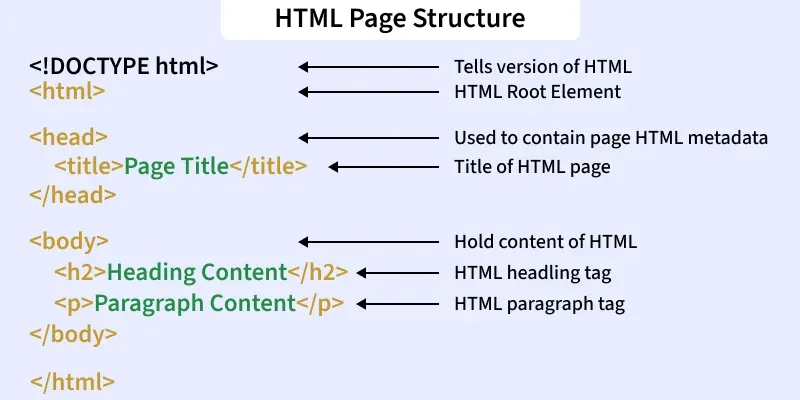

Web development involves creating websites and wweb applications for the internet or an intranet. It encompasses a wide range of tasks, from developing simplecstatic pages to complex web applications, e-commerce platforms, and social networks. Web development can be divided into three main specializations:
1. Front-End Development: Focuses on the part of a website that users interact with. Key technologies include- HTML, CSS, JavaScript, and various frameworks lik React, Angular, or Vue.js.e
2. Back- End Development: Dels with server- side logic, databases, and application functionality. Common languages and frameworks include- Python(Django, Flask), Ruby(Rails) PHP, and Node.js.
3. Full- Stack Development: Encompasses both front-end and back- end evelopment.
HTML (Hyper Text Markup Language) is the standard language for creating web pages. It defines the structure and content of web documents using tags and attributes to format texts, embed images, create links and build interactive elements, facilitating communication between web browser and server.
HTML is the backbone of any web page. It provides the basic structure of the page, divided into elements like headers, paragraphs, links, and images. These elements are represented by tags, which tell the browser how to display the content.
Understanding and using HTML effectively is key to creating a well- structured web page.

<DOCTYPE>- The first item to appear in the source code of a web page is the <DOCTYPE> declaration. This declaration represents the document type and helps browser to display web pages correctly. It must only appear once, at the top of the page (before any HTML tags). The declaration is not case sensitive.
<html>- Immediately after the <DOCTYPE> declaration, <html> element comes - this is the root element of the document tree and everything that follows is a descendant of that root element. It serves as the parent to both the <head> and <body> tags. The <html> element breaks the document into two main sections- the <head> and the <body>.
<head>- The <head> element contains the metadata ‐ information that describes the document itself, or associates it with related resources, such as scripts, style sheets, and <title> describes the document's title or name.
<body>- This is where the bulk of the page is contained. Everything that you can see in the browser window is contained inside this element, including paragraphs, lists, links, images, tables and more.
Each element is represented by a start tag, content, and an end tag. Every HTML element begins with an opening tag and ends with a closing tag. Elements can contain text, attributes, or other nested elements. The browser reads elements to render the page visually. Proper nesting of elements ensures valid and accessible HTML. HTML
elements are not case- sensitive. For example, <B> and <b> are both represent bold text. However, it's a best practice to use lower case tags for consistency and readability.
Syntax-
<tagname> Your Content... </tagname>
An opening tag indicates where the content begins: <tagname>.
A closing tag indicates where the content ends: </tagname>.
The actual content resides between the opening and closing tags.
HTML elements without any content i.e., that do not print anything are called empty elements. These elements are also known as self- closing tags. Empty elements do not have an ending tag. For instance, <br>, <hr>, <img>, <link> etc are HTML elements.
Syntax-
<tagname />
Inline elements do not start on a new line, take only the width of their content, and are used within block- level elements to add or style content. For example, <span>, <a>, <strong>, <em>, <img>, <input>, <label>, <button> etc are inline level elements.
Block level elements start on a new line, occupy the full available width, stack vertically, and can contain both block level and inline level elements. For example, <p>, <div>, <h1> to <h6>, <ul>, <ol>, <li>, <table>, <form> etc are block level elements.
Tags in HTML are the building blocks of web pages, used to structure and format content. They guide browsers on how to display text, images, links, and other media. HTML tags, enclosed in <>, usually come in opening and closing pairs. Opening tags start elements; closing tags end them (/). Some tags like, <img>, and <br> are self- closing. Essential tags include <!DOCTYPE html>, <html>, <head>, and <body>.
HTML attributes are special words used within the opening tag of an HTML element. They provide additional information about HTML elements. Attributes are used to configure and adjust the element's behaviour, appearance, or functionality in a variety of ways.
Each attribute has a name and a value, formatted as name=”value”.
Attributes tell the browser how to render the element or how it should behave during user interactions.
Syntax-
<tagname attribute_name=”attribute_value”> Content </tagname>
<!-- Comment --><!-- Multi- line
comment -->